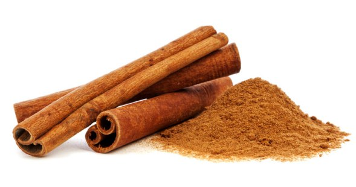
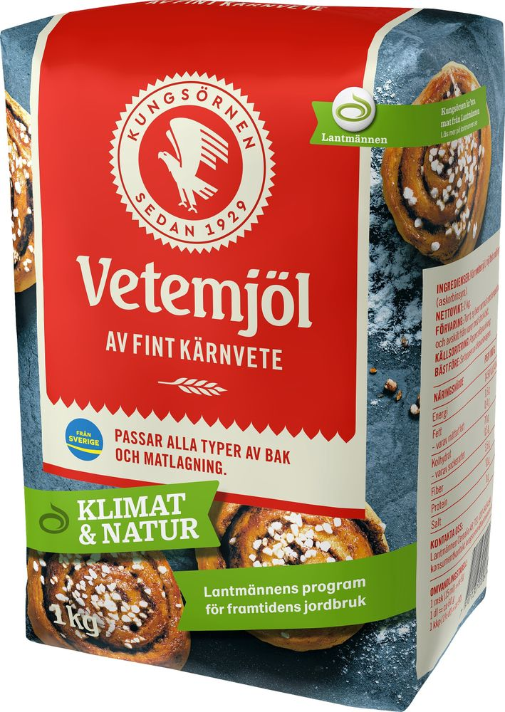
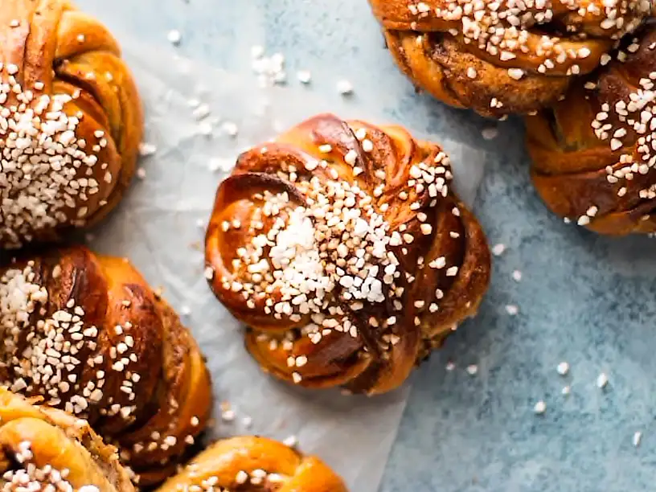

ingredienser
Kanelfyllning
- 150 g smör, rumsvarmt
- 1 dl farinsocker
- 1 dl strösocker
- 5 tsk malen kanel
- 2 tsk majsstärkelse
- 1 msk vatten
Vetedeg
- 50 g jäst, rumstempererad
- 500 g mjölk, rumstempererad [5 dl]
- 1 msk malen kanel
- 250 g smör
- 200 g strösocker [2 dl]
- 1 kg vetemjöl [16,5 dl]
- 1 tsk salt
Pensling
- 1 ägg
- ca 1 krm salt
- vatten
- pärlsocker (till garnering)
Sockerlag
- 2 dl vatten
- 1 dl strösocker


